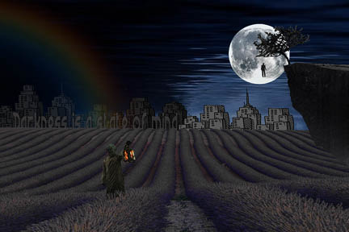
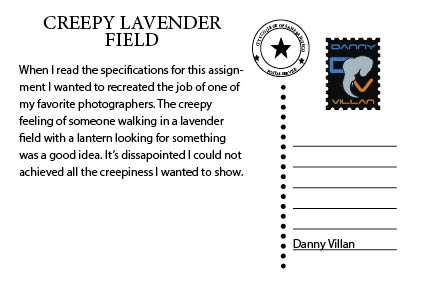
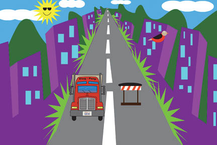
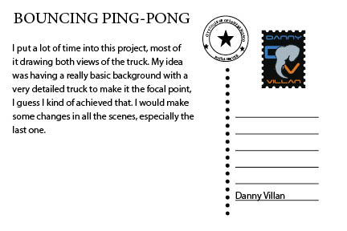
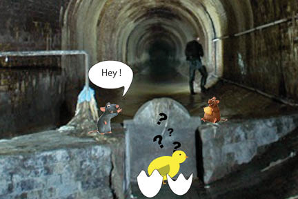
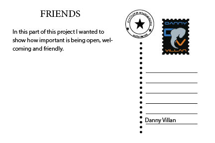
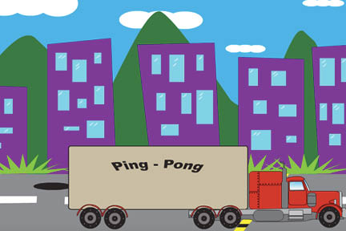
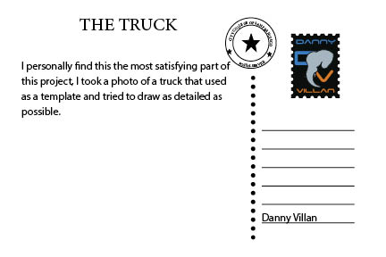

 
 
 
 
In our final inDesign project we used our previous projects to make post cards, in the back of the post card we described every project, hope I’m not writing the same again. I made a “stamp” to put into my post cards just to add a little extra detail.